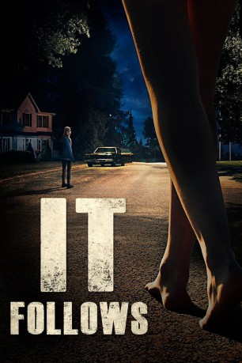

#2458 It Follows
 gesehen am 12.11.2015
gesehen am 12.11.2015
 
 IMDB-Wertung: 6.9 / 10
IMDB-Wertung: 6.9 / 10  Metascore: 83
Metascore: 83 
For nineteen-year-old Jay, Autumn should be about school, boys and week-ends out at the lake. But after a seemingly innocent sexual encounter, she finds herself plagued by strange visions and the inescapable sense that someone, something, is following her. Faced with this burden, Jay and her friends must find a way to escape the horrors, that seem to be only a few steps behind.
Jahr: 2014
Dauer: 100 Minuten
FSK: 12
Land: USA Studio: RADiUS-TWCTonspuren: DD5.1 - ,
Untertitel:
Auflösung: 1080p (1920x800) Größe: 8110 MB
Genre: Horror, Mystery, Thriller
Regisseur: David Robert Mitchell
Drehbuch: David Robert Mitchell
Soundtrack: Rich Vreeland
Darsteller:
- Carollette Phillips als Woman with Groceries
 Keir Gilchrist als Paul
Keir Gilchrist als Paul Maika Monroe als Jay Height
Maika Monroe als Jay Height- Lili Sepe als Kelly Height
- Debbie Williams als Mrs. Height
- Olivia Luccardi als Yara
 Jake Weary als Hugh / Jeff
Jake Weary als Hugh / Jeff- Daniel Zovatto als Greg Hannigan
- Ruby Harris als Mrs. Redmond
 Linda Boston als Teacher
Linda Boston als Teacher- Ingrid Mortimer als Old Woman in Pajamas
- Claire Sloma als Greg's Date, Pretty Girl in Car
- Scott Norman als Homeless Man Behind Tree
- Joanna Bronson als Nurse
 Ele Bardha als Mr. Height
Ele Bardha als Mr. Height- Bailey Spry als Annie
- Loren Bass als Annie's Father
- Charles Gertner als Neighbor Boy
- Leisa Pulido als Mrs. Hannigan
- D.J. Oliver als Police Officer
- Kourtney Bell als Chatting Girl
- Alexyss Spradlin als Girl in Kitchen
- Mike Lanier als Giant Man
- Erin Stone als High School Girl in Courtyard
- Don Hails als Old Naked Man
- Christopher Hohman als Hot Guy , uncredited
- Rich Vreeland als High School Announcer , uncredited
Datei: X:\2014(G-M)\It Follows (2014, FSK12, 1920x800).mkv seit 11.11.2015
Festplatte: HD 2013(I-Z)-2014(A-Z)
 Es gibt insgesamt 136 Filme in der Gruppe '2014(G-M)'
Es gibt insgesamt 136 Filme in der Gruppe '2014(G-M)'